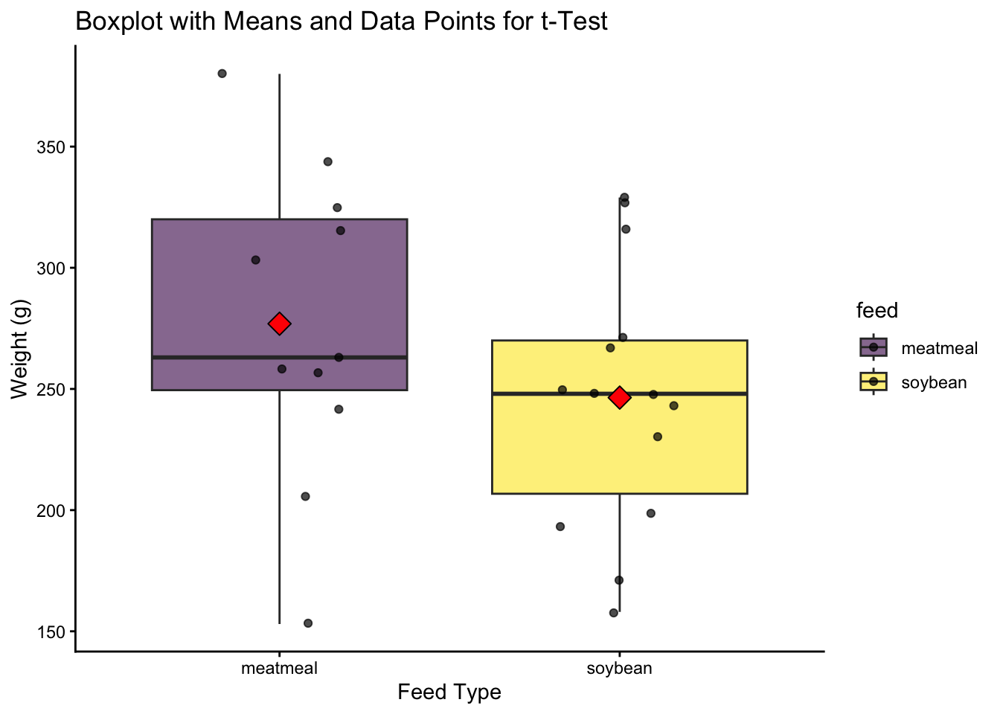
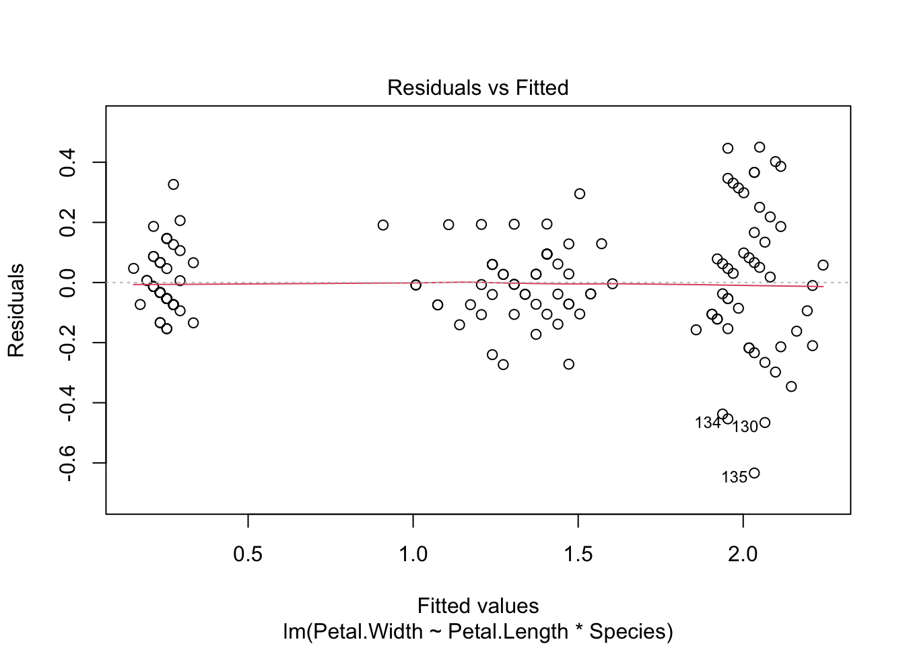
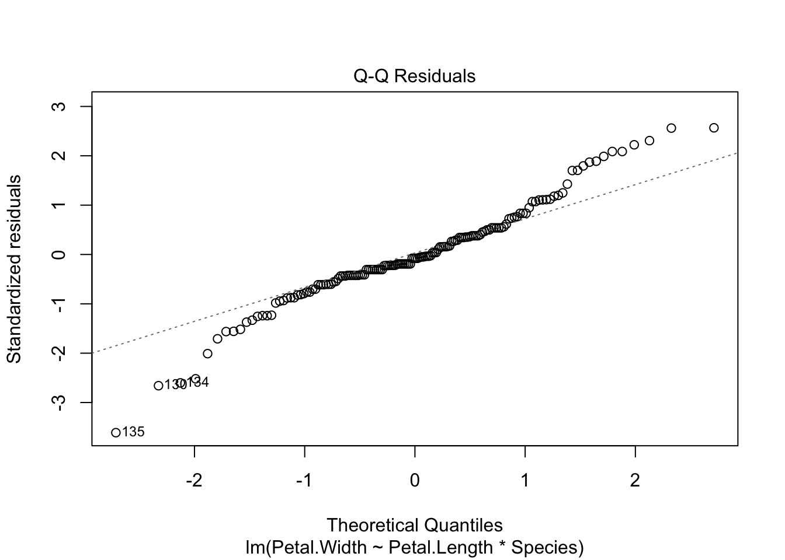
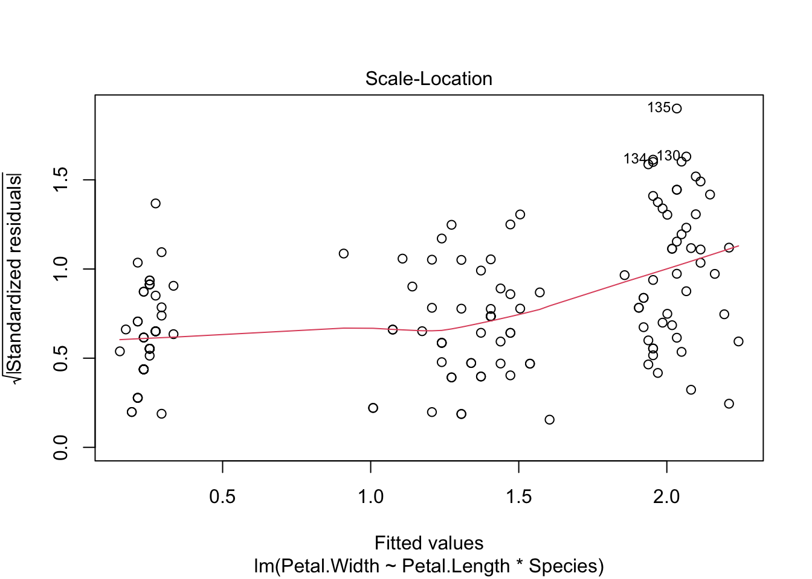
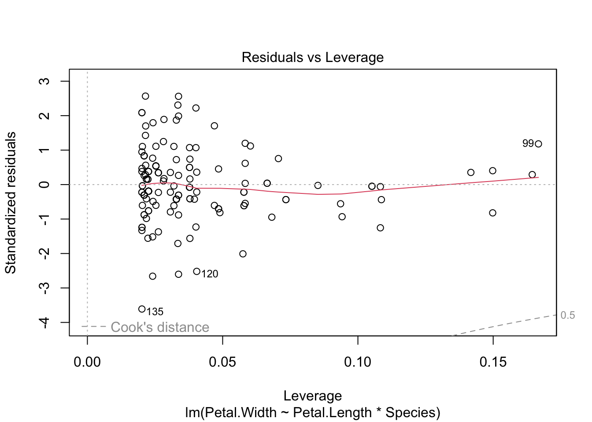
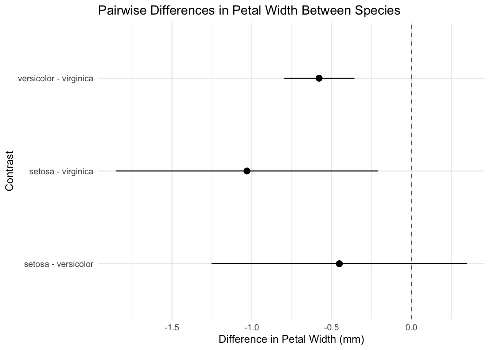

Please use this file to complete your homework. This homework is meant to provide some practice working with data from importing through visualisation and to reflect on some core concepts in experimental design that we confront as analysts.
Instructions
Step 1: Rename this file as follows: “DSP1-HW2-Name-StudentID” with your name and student ID replacing the appropriate parts. Step 2: Update the author field in the YAML as indicated. Step 3: Ensure the document has a Table of Contents when rendered (hint: you set this in the YAML) Step 3: Complete to the Tasks below. Be sure to add meaningul label tags to each R code chunk and structure your analysis sensibly. Step 4: Render to html or pdf (you may need to change target formats in the YAML) Step 5: Zip (or otherwise compress) the html other relevant support folders and include this qmd file with your work filled in Step 6: Submit the compressed folder which should be named “DSP1-HW2-Name-StudentID” through the e-classroom by Tuesday 25 Nov 23:00.
Hint: Make sure that when I open the html file I can view all the embedded images, see all your code and easily identify your responses to questions.
Note: Please see the rules for using AI on the e-classroom.
Task 1 - Comparing two groups
Determine if the weight of chickens eating two different diets differs using the chickwts dataset. Explore, analyse, and explain a statistical analysis comparing two groups. Include an explanation of each step you took and why you took that step.
Compare chicken weights between those eating meatmeal and soybean diets from the built-in chickwts dataset. Check the help for the dataset for a source reference.
View code
summary(chickwts)
weight feed
Min. :108.0 casein :12
1st Qu.:204.5 horsebean:10
Median :258.0 linseed :12
Mean :261.3 meatmeal :11
3rd Qu.:323.5 soybean :14
Max. :423.0 sunflower:12
View code
# view(chickwts)
Loading and Filter the Data
Isolating the groups for my analysis, in this case i am interested in meatmeal and soybean feeds.
View code
library(dplyr)
Attaching package: 'dplyr'
The following objects are masked from 'package:stats':
filter, lag
The following objects are masked from 'package:base':
intersect, setdiff, setequal, union
Shapiro-Wilk normality test
data: chick_two$weight[chick_two$feed == "soybean"]
W = 0.9464, p-value = 0.5064
The Shapiro-Wilk test results show high p-values (0.9612 for meatmeal and 0.5064 for soybean), meaning we do not have enough evidence to reject the null hypothesis that the data is normally distributed, which satisfies the normality assumption required for a standard independent two-sample t-test.
Check Equal Variances (F-Test)
View code
var.test(weight ~ feed, data = chick_two)
F test to compare two variances
data: weight by feed
F = 1.4376, num df = 10, denom df = 13, p-value = 0.5312
alternative hypothesis: true ratio of variances is not equal to 1
95 percent confidence interval:
0.4423822 5.1511782
sample estimates:
ratio of variances
1.437595
The p-value of 0.5312 is much greater than the typical significance level of alpha = 0.05, leading us to fail to reject the null hypothesis of equal variances, thus satisfying the homogeneity of variance assumption required for the t-test (or allowing us to proceed with a pooled-variance t-test).
Welch Two Sample t-test
data: weight by feed
t = 1.2525, df = 19.449, p-value = 0.2252
alternative hypothesis: true difference in means between group meatmeal and group soybean is not equal to 0
95 percent confidence interval:
-20.37407 81.33511
sample estimates:
mean in group meatmeal mean in group soybean
276.9091 246.4286
We conclude that the observed difference in sample means meatmeal mean = 276.9091 g vs. soybean mean= 246.4286 g is not large enough to be considered statistically significant, and could reasonably be due to random chance or sampling variability.
Visualisation of t-test plot
View code
ggplot(chick_two, aes(x = feed, y = weight, fill = feed)) +geom_boxplot(alpha =0.6) +geom_jitter(width =0.2, alpha =0.7) +stat_summary(fun = mean, geom ="point", shape =23, size =4, fill ="red") +theme_classic() +scale_fill_viridis_d(option ="viridis") +labs(title ="Boxplot with Means and Data Points for t-Test",y ="Weight (g)", x ="Feed Type")

Task 2 - Comparing two methods of comparing two groups
Using the same dataset compare the diets of casein and linseed. Use both a t-test and a wilcoxon rank-sum test. Explain which one you would choose and show why you made that decision, then report the outcomes of that test.
Loading a new dataframe containing only the observations for the casein and linseed feed groups.
Shapiro-Wilk normality test
data: chick_case_lin$weight[chick_case_lin$feed == "linseed"]
W = 0.96931, p-value = 0.9035
The Shapiro-Wilk test results show p-values (0.2592 for casein and 0.9035 for linseed), meaning we do not have enough evidence to reject the null hypothesis that the data is normally distributed for either group, which satisfies the normality assumption required for a standard independent two-sample t-test.
View code
var.test(weight ~ feed, data = chick_case_lin)
F test to compare two variances
data: weight by feed
F = 1.5216, num df = 11, denom df = 11, p-value = 0.4977
alternative hypothesis: true ratio of variances is not equal to 1
95 percent confidence interval:
0.4380271 5.2854918
sample estimates:
ratio of variances
1.521574
The p-value of 0.4977 is much greater than the typical significance level of alpha = 0.05, leading us to fail to reject the null hypothesis of equal variances, thus confirming that the homogeneity of variance assumption is met and a standard t-test would be appropriate regarding this assumption.
View code
t.test(weight ~ feed, data = chick_case_lin)
Welch Two Sample t-test
data: weight by feed
t = 4.3781, df = 21.097, p-value = 0.0002606
alternative hypothesis: true difference in means between group casein and group linseed is not equal to 0
95 percent confidence interval:
55.05122 154.61545
sample estimates:
mean in group casein mean in group linseed
323.5833 218.7500
Since the p-value is 0.0002606, which is much smaller than the conventional significance level of alpha = 0.05, we reject the null hypothesis.
concluding that the mean weight of chickens fed casein is significantly different from the mean weight of chickens fed linseed.
There is a high difference between the 2
View code
wilcox.test(weight ~ feed, data = chick_case_lin, conf.int =TRUE)
Warning in wilcox.test.default(x = DATA[[1L]], y = DATA[[2L]], ...): cannot
compute exact p-value with ties
Warning in wilcox.test.default(x = DATA[[1L]], y = DATA[[2L]], ...): cannot
compute exact confidence intervals with ties
Wilcoxon rank sum test with continuity correction
data: weight by feed
W = 128.5, p-value = 0.001221
alternative hypothesis: true location shift is not equal to 0
95 percent confidence interval:
54.00003 160.99999
sample estimates:
difference in location
109.7945
While I dont have too much argument on which to choose and why, I would go choose randomly based on the values i am getting Both the normality assumption (based on Shapiro-Wilk p-values) and the homogeneity of variance assumption (based on the F-test p-value) were met. I would choose the t-test.
Fit a linear regression predicting petal width based on petal length and species of iris using the built-in iris dataset
Answer the following questions/complete the following tasks:
Plot the data in a useful way to show any potential relationships. Add a reference to the data source as a caption to the plot (hint: check help(iris) and use the Anderson reference).
View code
data(iris)ggplot(iris, aes(x = Petal.Length, y = Petal.Width, color = Species)) +geom_point() +theme_classic() +labs(title ="Petal Width vs Petal Length by Iris Species",caption ="Anderson, E. (1935). The irises of the Gaspé Peninsula. Bulletin of the American Iris Society, 59, 2–5.")
Fit a linear regression to the data. Is linear regression appropriate for the data?
View code
iris_lm <-lm(Petal.Width ~ Petal.Length * Species, data = iris)summary(iris_lm)
Call:
lm(formula = Petal.Width ~ Petal.Length * Species, data = iris)
Residuals:
Min 1Q Median 3Q Max
-0.6337 -0.0744 -0.0134 0.0866 0.4503
Coefficients:
Estimate Std. Error t value Pr(>|t|)
(Intercept) -0.04822 0.21472 -0.225 0.822627
Petal.Length 0.20125 0.14586 1.380 0.169813
Speciesversicolor -0.03607 0.31538 -0.114 0.909109
Speciesvirginica 1.18425 0.33417 3.544 0.000532 ***
Petal.Length:Speciesversicolor 0.12981 0.15550 0.835 0.405230
Petal.Length:Speciesvirginica -0.04095 0.15291 -0.268 0.789244
---
Signif. codes: 0 '***' 0.001 '**' 0.01 '*' 0.05 '.' 0.1 ' ' 1
Residual standard error: 0.1773 on 144 degrees of freedom
Multiple R-squared: 0.9477, Adjusted R-squared: 0.9459
F-statistic: 521.9 on 5 and 144 DF, p-value: < 2.2e-16
View code
# Diagnostic plots to check appropriatenessplot(iris_lm)




yes, the model provides a strong predictive fit (R^2=0.9477),
What is the effect of a one unit increase in petal length on petal width?
Yes, there are statistically significant differences in Petal Width for two out of the three species pairs and its Setosa vs. Virginica
The difference between Setosa and Virginica is significant, with Virginica having an estimated Petal Width 1.03 cm larger (95% CI: -1.8513922 to -0.2093448 ) than Setosa.
Similarly, Versicolor has a significantly smaller Petal Width than Virginica, with an estimated difference of 0.5786162 cm (95% CI: -0.8003913 to -0.3568410). However, the estimated difference between Setosa and Versicolor (-0.4517524 cm) is not statistically significant as its 95% confidence interval [-1.25, 0.348] includes zero.
Below is a plot
Visualization of Differences
View code
library(tidyverse)
── Attaching core tidyverse packages ──────────────────────── tidyverse 2.0.0 ──
✔ forcats 1.0.1 ✔ stringr 1.5.1
✔ lubridate 1.9.4 ✔ tibble 3.3.0
✔ purrr 1.1.0 ✔ tidyr 1.3.1
✔ readr 2.1.5
── Conflicts ────────────────────────────────────────── tidyverse_conflicts() ──
✖ dplyr::filter() masks stats::filter()
✖ dplyr::lag() masks stats::lag()
ℹ Use the conflicted package (<http://conflicted.r-lib.org/>) to force all conflicts to become errors
View code
iris_pairs_df <-as_tibble(confint(iris_pairs))ggplot(iris_pairs_df, aes(x = contrast, y = estimate, ymin = lower.CL, ymax = upper.CL)) +geom_pointrange() +geom_hline(yintercept =0, linetype ="dashed", color ="red") +coord_flip() +theme_minimal() +labs(title ="Pairwise Differences in Petal Width Between Species",y ="Difference in Petal Width (mm)", x ="Contrast")

Create a visualisation of the petal width data with the regression lines for each species overlayed on the points.
View code
ggplot(iris, aes(x = Petal.Length, y = Petal.Width, color = Species)) +geom_point() +geom_smooth(method ="lm", se =FALSE) +theme_classic() +labs(title ="Petal Width vs Petal Length with Regression Lines by Species")